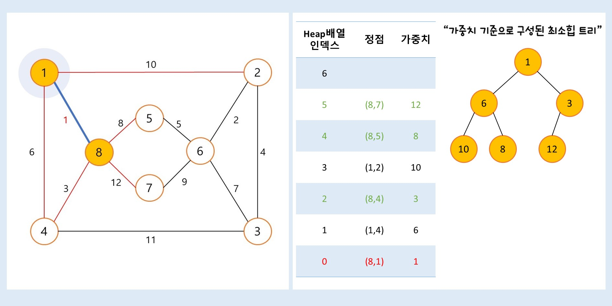
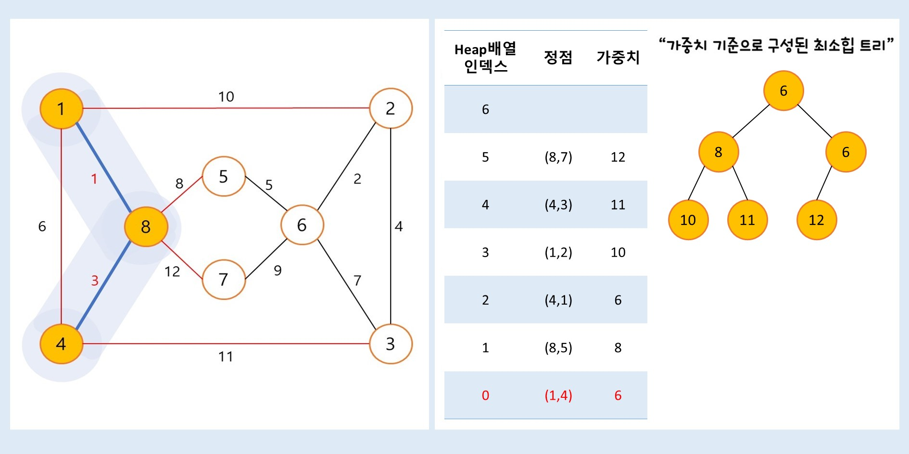
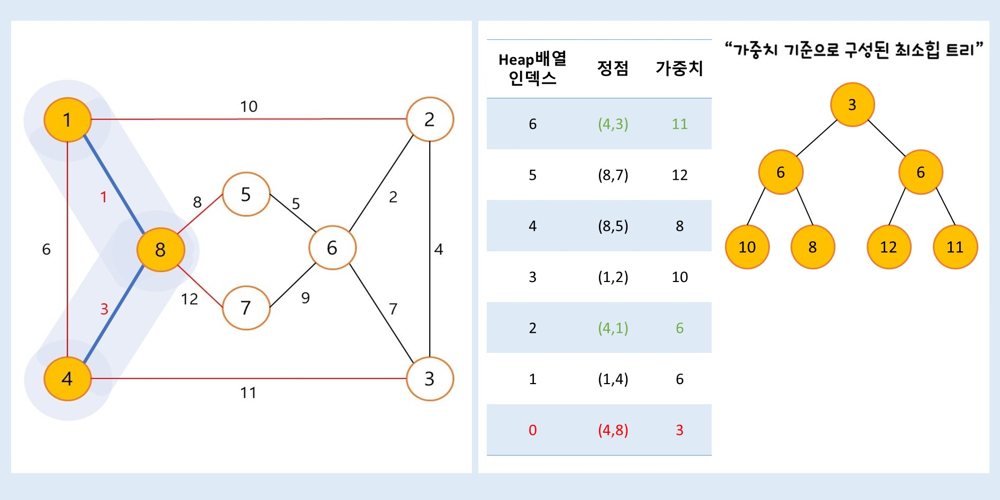
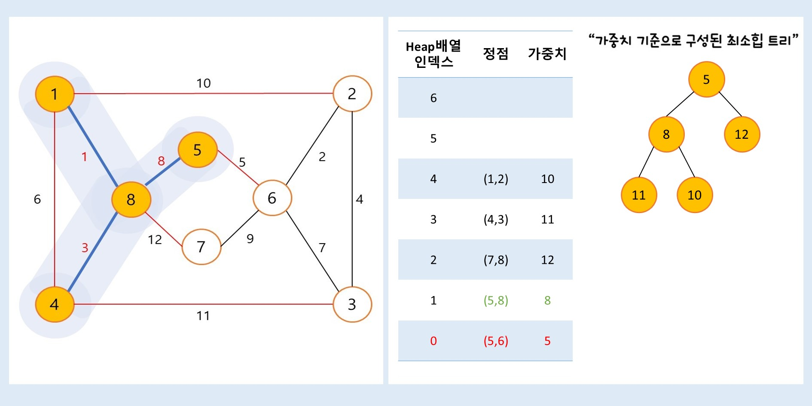
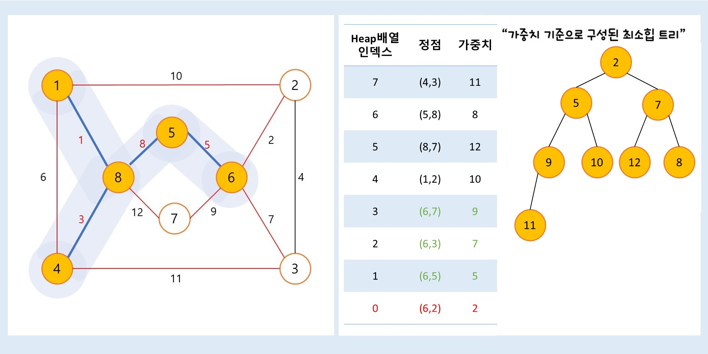
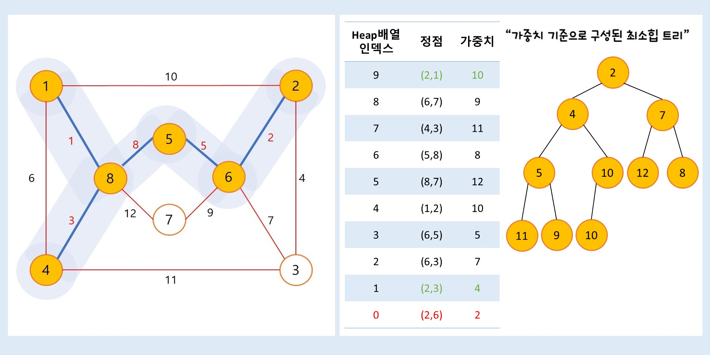
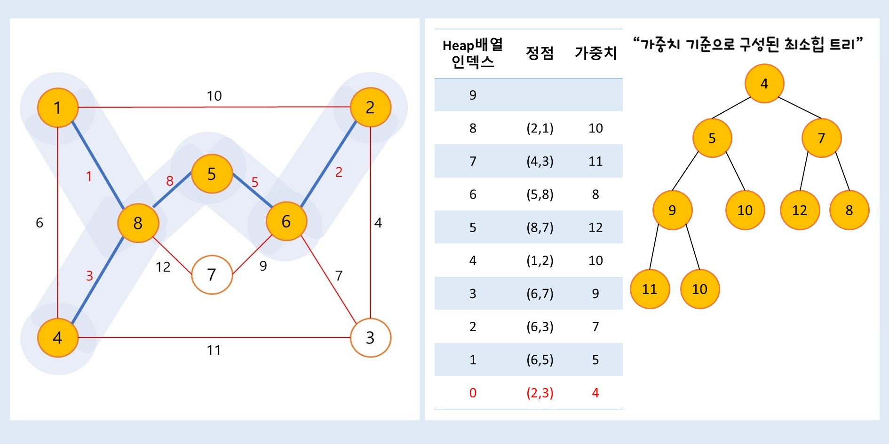
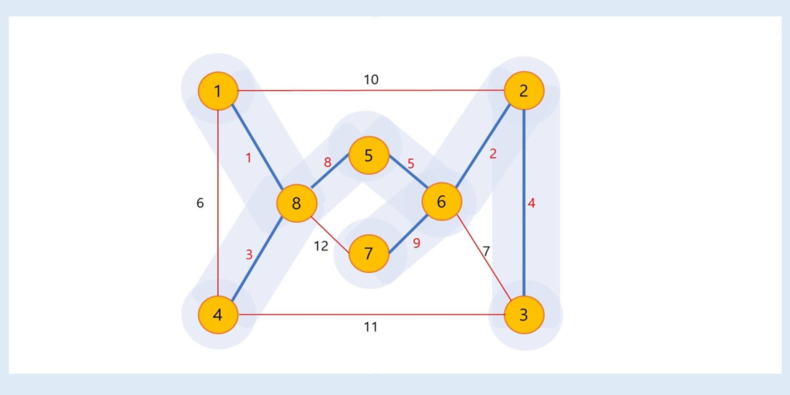

"Prim의 MST 알고리즘 예제_1"

예제_1 그래프의 시작정점) 2번
" 예제_1번 그래프를 Prim알고리즘을 통하여,
최소 비용 신장트리를 만드는 과정을 살펴보자 "
(1) 정점 2에서 출발한다고 하자. 맨 처음에는 신장 트리T 집합은 {2}가 된다.
▶정점 2와 인접한 정점 : 6, 5, 4, 3, 1
▶정점 2와 인접한 정점과의 간선정보를 힙트리에 삽입한다.
→ 1번째) 정점 6(정점 2와 연결, 두 정점 사이의 비용 : 6) 삽입
→ 2번째) 정점 5(정점 2와 연결, 두 정점 사이의 비용 : 2) 삽입
→ 3번째) 정점 4(정점 2와 연결, 두 정점 사이의 비용 : 10) 삽입
→ 4번째) 정점 3(정점 2와 연결, 두 정점 사이의 비용 : 4) 삽입
→ 5번째) 정점 1(정점 2와 연결, 두 정점 사이의 비용 : 7) 삽입
(2) 이 상태에서 인접 정점 중에서 최소 간선(2-5 : 2)을 선택하면 신장 트리T 집합에 정점 5가 추가되어,
신장 트리T 집합은 {2, 5}이 된다.
정점 2와 정점 5사이의 비용 2을(를) 추가합니다
▶정점 5에 인접한 정점 : 7, 4, 2, 1
▶정점 5와 인접한 정점과의 간선정보를 힙트리에 삽입한다.
→ 1번째) 정점 7(정점 5와 연결, 두 정점 사이의 비용 : 5) 삽입
→ 2번째) 정점 4(정점 5와 연결, 두 정점 사이의 비용 : 11) 삽입
→ 3번째) 정점 2(정점 5와 연결, 두 정점 사이의 비용 : 2) 삽입
→ 4번째) 정점 1(정점 5와 연결, 두 정점 사이의 비용 : 3) 삽입
(2-1)▶정점 2를 heap배열에서 추출합니다.
정점 2는 이미 트리T에 포함된 정점입니다.
▶이미 트리 T에 포함된 정점 2를 최소 힙트리에서 삭제합니다
→ 정점 2(정점 5와 연결, 두 정점 사이의 비용 : 2) 삭제
최소 힙트리 재구성합니다.

(3) 이 상태에서 인접 정점 중에서 최소 간선(5-1 : 3)을 선택하면 신장 트리T 집합에 정점 1이 추가되어,
신장 트리T 집합은 {2, 5, 1}이 된다.
정점 5와 정점 1사이의 비용 3을(를) 추가합니다
▶정점 1과 인접한 정점 : 6, 5, 2
▶정점 1과 인접한 정점과의 간선정보를 힙트리에 삽입한다.
→ 1번째) 정점 6(정점 1와 연결, 두 정점 사이의 비용 : 10) 삽입
→ 2번째) 정점 5(정점 1와 연결, 두 정점 사이의 비용 : 3) 삽입
→ 3번째) 정점 2(정점 1와 연결, 두 정점 사이의 비용 : 7) 삽입
(3-1)▶ 정점 5를 heap배열에서 추출합니다.
정점 5는 이미 트리T에 포함된 정점입니다.
▶이미 트리 T에 포함된 정점 5를 최소 힙트리에서 삭제합니다
→ 정점 5(정점 1와 연결, 두 정점 사이의 비용 : 3) 삭제
최소 힙트리 재구성합니다.
(4) 이 상태에서 인접 정점 중에서 최소 간선(2-3 : 4)을 선택하면 신장 트리T 집합에 정점 3이 추가되어,
신장 트리T 집합은 {2, 5, 1, 3}이 된다.
정점 2와 정점 3사이의 비용 4을(를) 추가합니다
▶정점 3과 인접한 정점 : 4, 2
▶정점 3과 인접한 정점과의 간선정보를 힙트리에 삽입한다.
→ 1번째) 정점 4(정점 3와 연결, 두 정점 사이의 비용 : 2) 삽입
→ 2번째) 정점 2(정점 3와 연결, 두 정점 사이의 비용 : 4) 삽입
(5) 이 상태에서 인접 정점 중에서 최소 간선(3-4 : 2)을 선택하면 신장 트리T 집합에 정점 4가 추가되어,
신장 트리T 집합은 {2, 5, 1, 3, 4}이 된다.
정점 3와 정점 4사이의 비용 2을(를) 추가합니다
▶정점 4와 인접한 정점 : 7, 6, 5, 3, 2
▶정점 4와 인접한 정점과의 간선정보를 힙트리에 삽입한다.
→ 1번째) 정점 7(정점 4와 연결, 두 정점 사이의 비용 : 4) 삽입
→ 2번째) 정점 6(정점 4와 연결, 두 정점 사이의 비용 : 9) 삽입
→ 3번째) 정점 5(정점 4와 연결, 두 정점 사이의 비용 : 11) 삽입
→ 4번째) 정점 3(정점 4와 연결, 두 정점 사이의 비용 : 2) 삽입
→ 5번째) 정점 2(정점 4와 연결, 두 정점 사이의 비용 : 10) 삽입
(5-1)▶정점 3를 heap배열에서 추출합니다.
정점 3는 이미 트리T에 포함된 정점입니다.
▶이미 트리 T에 포함된 정점 3를 최소 힙트리에서 삭제합니다
→ 정점 3(정점 4와 연결, 두 정점 사이의 비용 : 2) 삭제
최소 힙트리 재구성합니다.
(6) 이 상태에서 인접 정점 중에서 최소 간선(4-7 : 4)을 선택하면 신장 트리T 집합에 정점 7이 추가되어,
신장 트리T 집합은 {2, 5, 1, 3, 4, 7}이 된다.
정점 4와 정점 7사이의 비용 4을(를) 추가합니다
▶정점 7과 인접한 정점 : 5, 4
▶정점 7과 인접한 정점과의 간선정보를 힙트리에 삽입한다.
→ 1번째) 정점 5(정점 7와 연결, 두 정점 사이의 비용 : 5) 삽입
→ 2번째) 정점 4(정점 7와 연결, 두 정점 사이의 비용 : 4) 삽입
(6-1)▶정점 2를 heap배열에서 추출합니다.
정점 2는 이미 트리T에 포함된 정점입니다.
▶이미 트리 T에 포함된 정점 2를 최소 힙트리에서 삭제합니다
→ 정점 2(정점 3와 연결, 두 정점 사이의 비용 : 4) 삭제
최소 힙트리 재구성합니다.

(6-2)▶정점 4를 heap배열에서 추출합니다.
정점 4는 이미 트리T에 포함된 정점입니다.
▶이미 트리 T에 포함된 정점 4를 최소 힙트리에서 삭제합니다
→ 정점 4(정점 7와 연결, 두 정점 사이의 비용 : 4) 삭제
최소 힙트리 재구성합니다.
(6-3)▶정점 7를 heap배열에서 추출합니다.
정점 7는 이미 트리T에 포함된 정점입니다.
▶이미 트리 T에 포함된 정점 7를 최소 힙트리에서 삭제합니다
→ 정점 7(정점 5와 연결, 두 정점 사이의 비용 : 5) 삭제
최소 힙트리 재구성합니다.
(6-4)▶정점 5를 heap배열에서 추출합니다.
정점 5는 이미 트리T에 포함된 정점입니다.
▶이미 트리 T에 포함된 정점 5를 최소 힙트리에서 삭제합니다
→ 정점 5(정점 7와 연결, 두 정점 사이의 비용 : 5) 삭제
최소 힙트리 재구성합니다.
(7) 이 상태에서 인접 정점 중에서 최소 간선(2-6 : 2)을 선택하면 신장 트리T 집합에 정점 6이 추가되어,
신장 트리T 집합은 {2, 5, 1, 3, 4, 7, 6}이 된다.
정점 2와 정점 6사이의 비용 6을(를) 추가합니다
▶모든 정점이 트리T에 추가되었습니다.
★프림알고리즘 탐색결과 최소비용 : 21